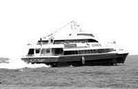

历史沿革
清代及以前
金门自古属福建省泉州府同安县所辖，1915年(民国四年)始创县治。汉人移民对金门的开发依据可考的史料始于晋代。根据清代《金门志》的记载，晋代共有苏、陈、吴、蔡、吕、颜六姓家族因躲避战祸移居金门。
803年(唐朝贞元十九年)，朝廷在泉州设置五个牧马场，浯洲为其中之一，陈渊任牧马监，此为金门岛上设置行政机构之始。蔡、许、翁、李、张、黄、王、吕、刘、洪、林、萧十二姓随陈渊入岛开垦，陈渊因此而被尊为"开浯恩主"。
金门(旧称浯洲)因产盐，历经五代十国闽王(王审知)及元明清等朝开发后，
造就金门东半岛上之金沙湾周围盐埕林立。元朝统治时(1343年-1368年)，中央为求实质统治，遂于浯洲凤翔里十七都后学村(今沙美)，设置浯洲盐场司(官职从七品官，在今金沙国中至东埔及荣光新村一带)及浯洲书院(现今之沙美菜市场)，沙美因处金沙湾与汶水溪及金沙溪交汇处。在元代，系为金门地区最高行政机关浯洲盐场司与浯洲书院之旧址(元朝浯洲盐场司马阙司令兴建)。过往的金沙地区更是金门地区居住人口与风狮爷最为稠密的地方(金门全岛共64尊风狮爷，金沙镇则高达39尊、沙美有3尊)。
元朝统治时，中国沿海各地与国外交流密集，故当时的沙美(后学村)，因位处金沙湾、浯洲盐场司、浯洲书院(明代为金山书院)、官镇埕、永安埕、浦头埕、沙美埕等盐埕边缘，除了岛民、盐工与书生众多及船运便利之外，区域内更是政商云集。后学街(今之沙美老街)，在此诸多有利之条件下，遂循着人类发展的脉络与历史轨迹，便自然而然的形成商业与贸易市集。从元朝统治以来，一直是金门东半岛的政经中心与文化重镇，迨自中华民国肇建初朝，金沙依然是金门地区的经济中心，民国时期的金沙湾金沙港，更是金门地区与中国大陆莲河通航金星轮的港埠。更是国民政府(国军)登陆金门的地方，一度还是金东守备师及青年军战车连的驻扎地。金门以一小岛，却出过四十三名进士，其中文进士四十人，武进士三人，实属不易。
金星轮1387年(明朝洪武二十年)，明太祖朱元璋令江夏侯周德兴经略福建沿海，共设五卫十二所。金门守御千户所为十二所之一，明兵部称呼金门是"中左所"，下辖峰上、管澳、田浦、陈坑四个巡检司，后又增设烈屿巡检司。因金门固守福建东南海口，取"固若金汤，雄镇海门"之意而得名金门。
南明时期，金门由郑成功政权实际控制。1664年(清康熙三年、南明永历十八年)清军攻占金门后，曾采取迁界措施，强制居民迁至海岸线30华里外，岛上人烟无存。1674年(康熙十三年、永历二十八年)至1679年(康熙十八年、永历三十三年)，郑氏复占金门，并以此作为对中国内陆进行军事行动的前进基地。1680年(康熙十九年、永历三十四年)清军二度攻占金门后，沿袭旧制隶属于福建省同安县(今福建省厦门市同安区)，1683年(康熙二十二年、永历三十七年)清军攻占台湾后实施复界，因迁界离开的居民陆续返回原籍。
民国时期
1914年(民国三年)，清代地方区划制度废除，厦门自同安县独立分置思明县(今厦门市)，金门划归思明县管辖。1915年(民国四年)金门独立设县，管辖大、小金门，大、小嶝岛及周边岛屿。1933年闽变发生后一度由"中华共和国"所据，划为泉海省(后改称兴泉省)。1937年(民国二十六年)日军占领金门，金门县政府暂时搬到大嶝乡(即今厦门市翔安区大嶝镇)上租借民房办公，直到1945年(民国三十四年)二次世界大战结束。
1949年至今
1949年(民国三十八年)，中国人民解放军攻克金门县的大嶝乡大嶝岛、小嶝岛及附近岛屿，成立大嶝区，委托由南安县代管，任命陈亦东为第一任中华人民共和国金门县县长。自此金门县出现两个县长并存的局面。10月古宁头战役后，台湾当局暂停县治改设金门军管区行政公署，1953年台湾当局结束军管制度，
恢复县治，成立金门县政府。
1953年12月，中共晋江专区委员会决定，由梁新民任金门县长兼南安县副县长，刘基固任中共金门县工委书记。1955年5月，福建省人民政府正式宣布成立金门县人民政府，但事实上是个空架子，由于时任县长梁新民兼任南安县副县长，故办公地点就设在南安县人民政府大院内。实际仅控制金门县的大嶝岛、小嶝岛及附近岛屿，设大嶝区。自此一度出现了国共双方两个"金门县政府"对峙的局面。而中华人民共和国的金门县县长梁新民，终其一生也未踏入过金门。
1958年8月23日至10月5日，中华人民共和国为声援中东人民的反侵略斗争，于金门爆发"八二三炮战"。直到1979年，中华人民共和国与美国建交，中国大陆发表《停止炮击大、小金门等岛屿的声明》，历时21年的金门炮战才正式划上句号。
1971年1月，中国大陆将实际控制金门县仅有的领土大嶝人民公社正式划归晋江地区同安县管辖。1980年1月，中国大陆将金门县划归晋江地区行政公署管辖，1986年1月后归泉州市管辖至今(并未实际控制)。
1995年10月18日，成立"金门国家公园"，成为台湾地区第六座"国家公园"，是首座位于离岛的"国家公园"，也是首座以维护历史文化资产、战役纪念为主，并兼具自然资源的国家公园。
截止到2004年2月3日，启动金门-厦门航海线，开始"小三通"。
地理环境
位置
金门福建省东南海上，地处东经118度32分，北纬24度44分，位于九龙江口外，与厦门湾口遥望，金门位于屹立台湾海峡中，东距基隆198海里，东南距潮湖82海里，距高雄160海里，西距厦门约18海里，距离福建省厦门市东南端的角屿仅1.8公里，离台湾岛有210公里。金门岛形如锭，东西长约20公里，南北最长处约15.5公里，中部狭窄处仅3公里，包括金门本岛(大金门)、烈屿(小金门)、大胆、二胆、狮屿、猛虎屿、草屿、后屿、东碇岛、复兴屿等十二个大小岛屿，总面积151.656平方公里。金门位于福建省东南海上，屹立台湾海峡中，东距基隆198海里，东南距潮湖82海里，距高雄160海里，西距厦门约18海里。
地貌
岛形似哑铃，东西宽，南北窄。金门全县面积150.145平方公里(本岛为134.25平方公里，尚辖、烈屿、大担、二担、乌丘、东引、东碇、北碇、等十二座岛屿)。金门岛形中狭如锭(或是一根骨头)，东西端较宽，东西长约20公里，南北最长处约15.5公里，中部狭窄处仅3公里，太武山雄踞东部，海拔253公尺。金门西面环海，环岛多港湾口岸，可停泊船艇者计30余处，潮高水深。
金门的主要地形为起伏的花岗岩地形，岛上最高峰为太武山(其高为253公尺，其上有毋忘在莒蒋公之手铭)，雄势雄伟，独冠屿上，近观之若兜鍪状，故名太武。其石纷纠萦纡若印章篆刻，又称"海印"，隔海远望，如仙人偃卧(仙人倒地卧不起之形)，海上人因别呼之为"仙山"。
太武山之外，东有鹊山、凤山、塔山;南有双山、长安山、丰莲山、太文山(古燕南山)、献台山、南磐山;西有矛山;西它雪鄐、虎山、天摩山、金山等等。
而古宁头区、古岗区、马山区与烈屿区除有部分丘陵地形外，多为地势平坦，红土广泛覆盖之台地，各区海岸则有花岗片麻被海水侵蚀而形成之崖面或平台，以及发育良好之沙滩，岩岸沙岸交错构成了金门多变的海岸景观。
气候
金门属亚热带海洋性气候全年降雨多集中于四至八月，台风多生于七、八月，全年风向东风占8个月，每年五至八月为东南风及南风。因金门为在海峡中之岛屿，四面无高山屏障，
水头码头
中间则丘陵起伏，故风力较强，夏有西南海风的吹拂，每到清明时候常带来浓雾，台金交通常受影响;东有强烈的东北季风。
全年降雨量多在四月至八月，台风则发于七月，风势以七月至十二月较强。年均温为摄氏20.9度，最高月均温是八月28.2度;最低月均温是元月12.8度;年平均降雨量不足一千公厘;四至九月是雨季，占全年降雨量80%。因受地形影响(花岗岩丘陵，为金门主要地形，金门无良好的蓄水地物，金门无巨川长流，最长者为西半岛之浯江溪，惟已呈干涸状态，旧河床隐约可辨。其他如金沙溪、后水溪、前埔溪、小径溪、西堡溪、山外溪等大多是涓涓细流，源短量少，平时多已涸渴;如遇风雨，又复一泻入海，雨不能得其利，旱则患其灾)。大兴水利，拦河筑坝，新辟湖塘，如太湖、兰湖、慈湖、双鲤湖、荣湖、陵水湖、田浦水库、金沙水库等等;但蓄量不多，遇旱年，常有缺水之苦。再加上开放观光，用水量大增，更使得供水更加的吃紧。
土壤
金门的地层，以花岗片麻岩为主，分布甚为广阔，约占总面积一半。岛上土壤概以砂土及裸露红壤土为代表。前者沙层厚、保水保肥力均差;后者表土薄、酸性重，腐植质少，皆不宜耕作，故岛上农作仅宜价值较低之耐旱性杂粮:如高粱、玉米、花生、蕃薯等。由于四面环海，浅滩深澳，鱼虾贝介类滋生，滨海居民乃讨生计于大海中，然因渔业资源有限，兼且幅员狭窄，地力贫脊，雨量稀少，农产不丰，只有少量之杂粮与蔬菜。居民乃远渡重洋，谋生异域，或移居台澎，或远适南洋，金门华侨足迹遍布东南亚，人口总数达二十余万之众，自古就有"侨乡"之称。
行政区划
金门县下辖3镇、3乡，金城镇、金湖镇、金沙镇、金宁乡、烈屿乡、乌丘乡(代管)。
名称 | 面积(平方公里) | 下辖区划 | 人口 | |
|---|---|---|---|---|
金城镇 | 21.7076 | 8里 | 220邻 | 34，781 |
| 金湖镇 | 41.6464 | 8里 | 163邻 | 23，119 |
金沙镇 | 41.0808 | 8里 | 140邻 | 16，503 |
金宁乡 | 29.8536 | 6村 | 143邻 | 20，747 |
烈屿乡 | 14.8536 | 5村 | 97邻 | 9，715 |
乌丘乡 | 1.2000 | 2村 | 2邻 | 569 |
总计 | 151.6560 | 37村里 | 765邻 | 105，434 |
人口民族
金门有居民始自东晋元帝建武。当时因五胡乱华，有苏、陈、吴、蔡、吕、颜等六姓迁住金门。唐德宗贞元十九年，福建观察使柳冕奏设"万安牧马监"于泉州，牧马监陈渊率十二姓氏:陈、蔡、许、翁、李、张、黄、王、吕、刘、洪、林姓屯居金门。在金门庵前村丰莲山一带牧马，广兴水利，人口因之日渐繁盛，后代金门子民遂尊称陈渊为"开浯恩主"。金门县志中记载，金门现有居民的组成，概分为五种，一是乱世遗民、二是泉州的世家大族、三是邻近都邑的商贾渔民、四是历代戍守金门的军人、五是赘婿谪配而来到金门的。
交通运输
岛内联系多倚靠公路交通，全岛公路密度为台澎金马地区各县市之冠。行驶方向与中国大陆相同：司机坐在左座、靠右行驶、左下右上，转盘方向是逆时针。
乌丘乡原属莆田县，与金门本岛间并无直接航班，须经由台中港中转。海运方面则有料罗与水头两商港，水头商港同时为小三通指定港口，与厦门和平码头间有定期航线。
海运
高雄-金门，金航海运公司（金门快轮），厦门五通码头-金门（厦金航线） ，泉州石井码头-金门（泉金航线）
航空
金门尚义机场位于岛的中部偏南，跑道方向是东西向，跑道长度约3000米，可容250座喷射客机起降，但因需求不大，多数航班以100座双涡轮螺旋桨客机执行。有往台北、台中、嘉义、台南、高雄各航线。有远东、复兴、瑞联、立荣、长荣、国华、大华等航空公司飞往金门。
公车
公共汽车半小时至一小时一班，可至金城、山外、沙美等站拿取公车时刻表，公车通常相当准时。计程车计程车起跳70元，每400公尺加收5元。
民俗风情
金门人的住屋四周多有避邪物，像八卦镜、屋墙有风狮爷等等，不一而足。风狮爷有肩负着捍卫村境平安的神圣任务。在小金门的辟邪物中，则是以专治白蚁的风鸡来挡风。金门缺乏深湾港澳，土地贫瘠乾旱，因生活不易，居民多从事小规模的农耕渔捞，或从戎征戍。因此当地居民，除了官宦门第外，绝大多数是农、工群众及少数交易买卖的商贩。在这种的社会背景下，所衍生的文化特质，有高尚尊贵和粗俗简略两个极端。但真正的金门人的生活文化，应该还是以平民大众为主的民生百态。
金门的民俗风情，既保持闽南特征，又独特迷人。民间传统节日与大陆的习俗特别和漳州、泉州完全一样。每年例行的祭祀赛会，以"迎城隍"的规模最大。岛上乡民视石狮为保护神，各村落路口，随处可见身穿盔甲或外围披风的立姿石狮，狮前常见香火，为金门独有的景观。位于金沙北端的山后中堡18栋闽南式古屋，燕尾高扬，既代表着金门民俗，也是中华绚丽多姿的体现，已被辟为"民俗文化村"。
风景名胜
金门的地理行政区域，分为金城、金湖、金宁、金沙以及烈屿等。金城是金门最早开发的地带。唐朝时牧马侯陈渊率十二姓来金门开垦，南宋大儒朱熹、明代名将俞大猷以及延平郡王郑成功、鲁王朱以海等均曾在此驻足。金城的古迹非常的多，其中较有名的古迹略述如下:
旧金城明洪武二十年(西元1387年)，朝廷设守御干户所于旧金城，直到清康熙年间，地方官署才移驻后浦。尚留下一些遗迹如古道、石坊、石碑可追寻。
牧马侯祠金门在唐德宗(公元800年左右)时期曾被福建设为牧马区，陈渊被派来担任牧马监的工作，他带领随从及十二姓来金门开垦，奠定了金门的发展基础。
浯江书院建于乾隆四十五年(公元1708年)，书院内有朱子祠，乃是为了纪念宋代名儒朱熹。朱熹曾讲学于金门，立燕南书院，金门受朱熹的教化颇深。
延平郡王祠夏墅岗由于形势险峻，以前是郑成功练兵的重镇。有座延平郡王祠，奉祀郑成功。其他有关的遗迹，还有莒光楼、点将石、国姓井与万人井等。
御赐里琼林坊:琼林旧称平林，因贤才尽出故明熹宗天启五年被御赐为琼林。琼林村的蔡氏家族，是明朝中叶从河南开封迁徙而来，明熹宗天启五年，因为平林籍的进士蔡献臣赶走蛮夷有功，于是赐里名"琼林"。琼林家庙经文建会评其为"十四世宗祠"，为台湾地区"国家"二级古迹。
延平郡王祠(3张)
鲁王墓据史料记载:"鲁王为明太祖九世孙，名朱以海.京师既陷，转徒台州，张国雄等迎居绍兴，称鲁监国，督师江上，画钱塘而守。后为清兵所克，遁入海，依郑成功，辗转到金门，去监国号。成功初以礼待之，后渐懈，以海不能平，将往南澳，成功使人沉之海";另据《辞海大事记》记载:康熙元年(1662)，鲁王薨于台湾，两处记载互相矛盾，还有待进一步考证。
明末清军入关后，明思宗自缢，天下大乱，南明各王四处流亡。鲁王朱以海辗转到金门，寓居七年之久，因时局太乱，死后秘密葬在金门，不敢立碑。1959年夏季，金门"国军"在旧金城东古岗湖西发现鲁王真冢。
由于发掘了鲁王真圹，在出土志里，说明旧时的谬误之处。据载王世系事迹綦详，卒年为王寅康熙元年(1662年)，并云王素患哮疾，中痰而死。文武百官遂将其葬于金门东门外的青山上，前有湖水，右有石峰。王屡游其地，曾题"汉影云根"四字于石上。
邱良功墓邱良功是清仁宗时剿海盗勇将。墓位于小径村，是金门保留最完整的古墓园，为"国家"二级古迹。
西村父子文魁西村吕氏宗祠建于清雍正七年，至今有二百五十年历史。宗祠内随处可见"理学明贤"、"文魁"、"明经"等牌匾，可感受到西村的文风兴盛。
金宁地方的古迹:金宁自古以来就是兵家必争之地，闻名中外的古宁头大战就发生在这里。
威振第位于古宁头北山村，是清水师提督李光显的故宅。李光显是清嘉庆年间缉讨海贼蔡牵的勇将之一，官累至广东水师提督，两广总督阮元亲题"海邦着绩"匾额相赠，他的故居又称为"提督衙"。为国家三级古迹。
水尾塔为镇水用的压胜物，通常立于河湖畔以镇水泛滥、保农作平安。风格独特仅存一座于古宁头北山村。金沙地方的古迹:僻处太武山外，金沙的开发晚于金门的其他地区，因传说盛产金沙而蒙上一层神秘的色彩。
西园盐场金门早在元朝时官方就设立盐场，最盛时达十处之多，而今天金门的盐场仅存西园村一处。陈桢恩荣坊、陈桢墓:陈桢一门五代家世显赫，位居高官。陈桢墓为国家二级古迹。山后民俗文化村:起源于清末旅日华侨王敬祥，在外经商有成，遂在故乡建大楼房。1975年政府将其重修整建开辟成民俗文物馆。
地方特产
金门高梁酒
金门高粱醋
由于金门高粱酒属于蒸馏酒，酿造过程须经由制造曲、蒸煮高粱以及发酵的步骤，每个流程都需要经验丰富的老师傅以熟练的手艺和技术层层把关，因此老师傅们在酿酒过程中意外发现手工蒸煮发酵之后的高粱竟然可以另外酿制出风味独具、滋味甘醇，和以往米醋风味迥异的高粱醋，让金门高粱醋成为金门暨高粱酒之后，最富有当地特色、远近知名的高粱名产。
金门贡糖
相传系明代闽南御膳贡品，招祥迎春．年节纳贡．后随厦门制饼师傅传入金门，并广被一般汉饼店所产制。
金门菜刀
金门历经1949年古宁头战役、1958年八二三炮战等战役，炮战遗落之炮弹壳可用来制作菜刀等民用刀具。金门制刀厂创建已六十余年历史，吴朝熙先生是金门第一把炮弹钢刀的创始人，其间更有许多中外知名媒体竞相采访。
金门的牛肉以高坑牛肉最有名，据说已故的蒋经国先生每回到金门都必定光临享用。高坑牛肉店生产的牛肉干，有原味、辣味、沙茶等多样口味，外地客可依所好挑选，辣味的实在是辣得过瘾；买上一两包馈赠亲友或留待自己回家慢慢享用。